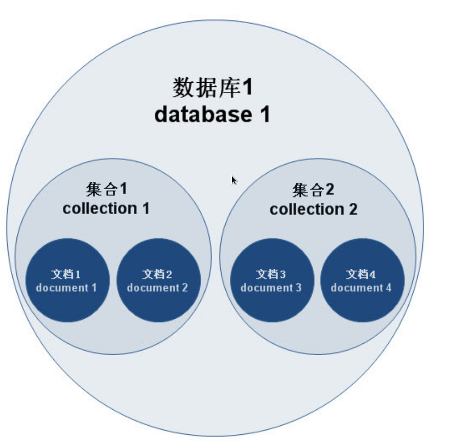
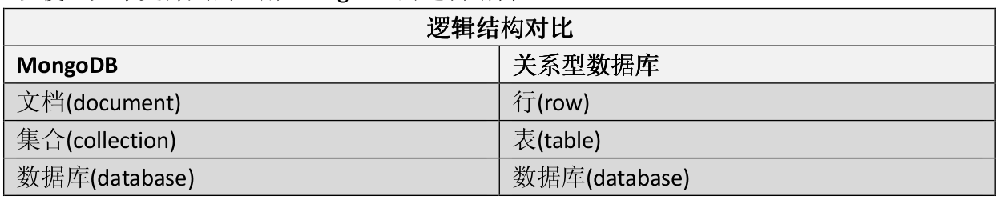

MongoDB 学习记录
- 什么是 MongoDB
- MongoDB 的组织形式
- MongoDB 有几种数据结构
- 如何创建数据库
- 那么怎么样才可以创建集合
- 如何删除集合和数据库
- 如何查看帮助文档
- 如何插入文档
- 如何查询插入的数据
- 如何删除数据
- 如何更新数据
什么是MongoDB
MongoDB 是一个 NoSQL 数据库，和 MySQL 等关系型数据库不一样 MongoDB 更简单易用。MongoDB 是 NoSQL 的一种。
MongoDB的组织形式
MongoDB 中可以有多个数据库，每个数据库中可以有多个集合，每个集合有多个文档（文档就相当于 MySQL 中的表，但是表中的数据都有相同的域，文档中的每一条数据不一定有相同的域），每个文档都有域，这些域可能存在也可能不存在，在实际使用中每个文档应该有相同的域。
MongoDB 的组织形式图解:

MongoDB 和 MySQL 的对对比：

MongoDB有几种数据结构
MongoDB 中以下几种数据结构：
- 数字
- 字符串
- 布尔
- 日期
- 数组
- 文档（JavaScript 中的对象）
如何创建数据库
MongoDB 中的数据库不用手动创建，只需要使用 use <collection> 就可以选择数据库，如何没有这个数据库，在创建一个集合的同时也会创建数据库
那么怎么样才可以创建集合
使用以下命令就可以创建一个集合
1 | db.createCollection("collectionName") |
如何删除集合和数据库
使用以下命令可以删除一个集合，其中 <collection> 表示选中的集合
1 | db.<collection>.drop() |
删除数据库可以使用以下命令删除，注意，这个 db 是由 use <database> 选中的数据库
1 | db.dropDatabase() |
如何查看帮助文档
在 Mongo shell 中直接使用 help 命令可以查看在线帮助文档
使用 db.help() 可以查看数据库相关的帮助文档
使用 db.<collectionname>.help() 可以查看数据库集合的相关帮助文档
如何插入文档
查看 db.<collectionname>.help() 可以看见 MongoDB 定义了三种方式来插入文档，有 insert,insertOne,insertMany，其中 insert 用处最多，具备有 insertOne 和 insertMany 的功能。
insertOne 用于向数据库中插入单条数据的情况，insertMany 用于一条命令向数据库中插入多条数据。
插入一条数据
1 | db.blog.insert({ |
插入多条数据
1 | db.blog.insert([ |
如何查询插入的数据
首先保证数据库中已经插入了下面这些数据
1 | db.blog.insert([ |
查询全部数据
要想查询的结果可读性更强，可以试试 pretty 方法 db.blog.find().pretty()
1 | db.blog.find() |
如何仅查询需要的字段
1 | db.blog.find({}, {title:1, author:1, publishDate:1, _id:1}) |
查询的第一个参数是筛选条件，{} 表示不过滤直接查询，也就是查询所有的数据，第二个参数设置需要显示的域，要显示的设置为 1, 不显示的设置为 0, _id 域默认显示，不想显示需要手动指定。
如何根据条件进行查询
1 | db.blog.find({title: "mongodb 数据库的创建"}) //根据博客名称进行查询 |
上面展示了三种根据条件进行查询的方式，这种方式类似于 MySQL 中的 where 字句但是也有不同。
第一条查询语句使用 {title: "mongodb 数据库的创建"} 来筛选，返回所有数据中满足 title 域对应的值等于 mongodb 数据库的创建 的语句。
第二条查询语句使用 {author: {firstName: "liu", lastName: "xin"}} 来筛选，注意，这个 author 是一个文档类型，查询的时候需要该文档类型中的所有域都相等。
第三条查询语句使用 {comment: 'dddd'} 来筛选，comment 是一个数组类型，查询时可以使用这种方式，表示查询的数组中含有 dddd 元素的数据，也可以使用 db.blog.find({comment: ["aaaa", "bbbb", "cccc"]}) 来查询，使用后一种方式时要使用匹配该数组中的所有元素才行。
如何查询stars大于 50 的数据
1 | db.blog.find({stars: {$gt: 50}}) |
在 MongoDB 中 >,<, 都不能使用，要使用特殊符号来表示这些。符号如下:
| 含义 | 表示 |
|---|---|
| 大于 | $gt |
| 小于 | $lt |
| 不等于 | $ne |
| 大于等于 | $gte |
| 小于等于 | $lte |
用法和示例类似
如何多条件查询
1 | db.blog.find({stars: 32, title: "走两步"}) |
要查询同时满足多个条件的数据，只需要如示例添加条件就行了。
如何查询满足其中一个条件的数据
如果要求返回匹配多个条件中的一个条件的数据，需要使用关键字 $or，相当于 or 语句。
1 | db.blog.find({$or: [{stars: 32}, {stars: 30}]}) |
如何按照stars从大到小从小到大排序
1 | db.blog.find({}).sort({stars:1}) //升序 |
如何实现分页
MongoDB 中也有 limit 方法，但是这个 limit 和 MySQL 中的 limit 不同，这个 limit 只会返回指定条数的数据，不能指定从什么位置开始读取。要实现和 MySQL 中的 limit 相同的功能，需要同时使用 skip 和 limit。
1 | db.blog.find({}).skip(1).limit(1) |
skip 表示跳过多条数据，limit 表示只读取多条数据，这里跳过第一条，只读取一条，那么就会读取所有数据的第二条。
如何实现分组
在 MySQL 中，分组首先要有一个字段，按照这个字段的不同分成不同的组。MongoDB 中也是一样，需要某一个域作为参数，返回这个参数的不同的值。
分组要 aggregate 方法和 $group 操作符，在 $group 操作符中，使用 _id 来说明分组的 key 。
1 | db.blog.aggregate([{$group: {_id:'$stars'}}]) //按照 stars 字段进行分组 |
如何删除数据
删除数据可以使用 remove,deleteOne 和 deleteMany 中的某一个。
如何删除一条数据
如果只想删除一条数据，使用 deleteOne，它会删除满足条件的第一条语句。
1 | db.blog.deleteOne({title: "mongodb 数据库的创建"}) |
如何删除多条数据
删除多条数据使用 deleteMany 是很不错的。
1 | db.blog.deleteMany({stars: {$gt: 30}}) |
删除单条数据使用 deleteOne，删除多条数据使用 deleteMany，至于 remove 一般情况下不需要使用，毕竟 deleteMany 既可以删除一条也可以删除多条。
如何更新数据
更新数据使用 update,updateOne 和 updateMany。
如何更新一条数据
更新一条数据使用 updateOne 方法，updateOne 方法会更新第一个匹配的数据。
1 | db.blog.updateOne({title: "mongodb 数据库的创建"}, {$set: {stars: 50}}) |
updateOne 接收两个参数，第一个参数是要修改数据的查询条件，和查询时使用的条件一样，第二个参数表示要更新的数据。 注意 ：如果没有使用 $set 那么这条数据就只有一个域那就是 {stars:50}，使用 $set 之后才会修改指定的域，不然就是覆盖整条数据。
如何更新多条数据
更新多条数据使用 updateMany，使用 update 也可以，可是使用 update 需要额外添加 {multi: true}，有些时候会忘记添加，忘记添加就相当于使用 updateOne。
1 | db.blog.updateMany({$or: [{title: "mongodb 数据库的创建"}, {title: "走两步"}]}, {$set: {stars: 1000}}) |
如何更新数据中的文档数据
在我们插入的数据中有 author 域，该域是一个文档类型，和普通数据类型不同，如何修改，删除，添加里面的数据
如何删除文档类型数据中的域
1 | db.blog.updateOne({title: "mongodb 数据库的创建"}, {$unset: {'author.lastName': 1}}) |
这里使用了 $unset，这个操作会删除一个域，'author.lastName' 表示 author 文档的 lastName 属性，1 表示删除。$unset 不仅可以删除一个文档中的域，也可以删除一个域。
如何在文档类型数据中插入新的数据
1 | db.blog.updateOne({title: "mongodb 数据库的创建"}, {$set: {'author.lastName': 'xin'}}) |
上述操作不仅可以插入新的数据，也可以用来更新数据
如何更新数组中的数据
和数组有关的操作符看这里
如何往数组中插入新的数据
往数组中插入新的数据使用 $push 操作符
1 | db.blog.updateOne({title: "mongodb 数据库的创建"}, {$push: {comment: 'zzzzzzzzzz'}}) |
如何删除数组中的数据
删除数组中的数据使用 $pop 操作符和 $pull 操作符。$pop 操作符用于删除并返回数组中的第一个或最后一个元素。$pull 操作符用于精确删除数组中匹配的数据。
1 | db.blog.updateOne({title: "mongodb 数据库的创建"}, {$pop:{comment:1}}) |
其中 {comment: 1} 中的 1 表示弹出并删除最后一个元素
1 | db.blog.updateOne({title:"mongodb 数据库的创建"}, {$pull: {comment: 'bbbb'}}) |
如何向数组中插入另一个数组的内容
如果直接使用 $push 向数组中插入一个数组的话，都将数组作为一个元素插入，而不是将数组中的所有元素依次插入。
为了将一个数组中的所有元素都插入到数组中，需要使用 $each 关键字。
1 | db.blog.updateOne({title:"mongodb 数据库的创建"}, {$push: {comment: {$each: [1, 2, 3, 4, 5]}}}); |
如何向数组中插入不重复数据
mongodb 没有提供编程语言中集合类型相似的数据结构，只有数组，为了不插入重复数据，可以使用 $addToSet 关键字，或者在输出的时候去重。
1 | db.log.updateOne({title: "mongodb 数据库的创建"}, {$addToPush: {comment: {$each: [7, 7, 7, 7]}}}); |
如何删除数组中的多个元素
只使用 $pusll 关键字无法删除数组中的多个元素，只能删除一个元素，要删除多个使用 $in 关键字。
1 | db.blog.updateOne({titile: "mongodb 数据库的创建"}, {$pull : {comment: {$in: [1, 2, 3, 4, 5]}}}); |
如何创建索引
使用文档中某个域创建索引，使用该域进行查询时可以加快查询速度
创建升序索引
1 | db.blog.createIndex({title:1}) |
创建降序索引
1 | db.blog.createIndex({title:-1}) |
如何查看创建索引
1 | db.blog.getIndexes() |
如何删除创建的索引
删除对应索引，删除索引时的名称不是创建索引时的名称，而是使用 getIndexes 查看的 name 属性的名称
1 | db.blog.dropIndex('title_1') |